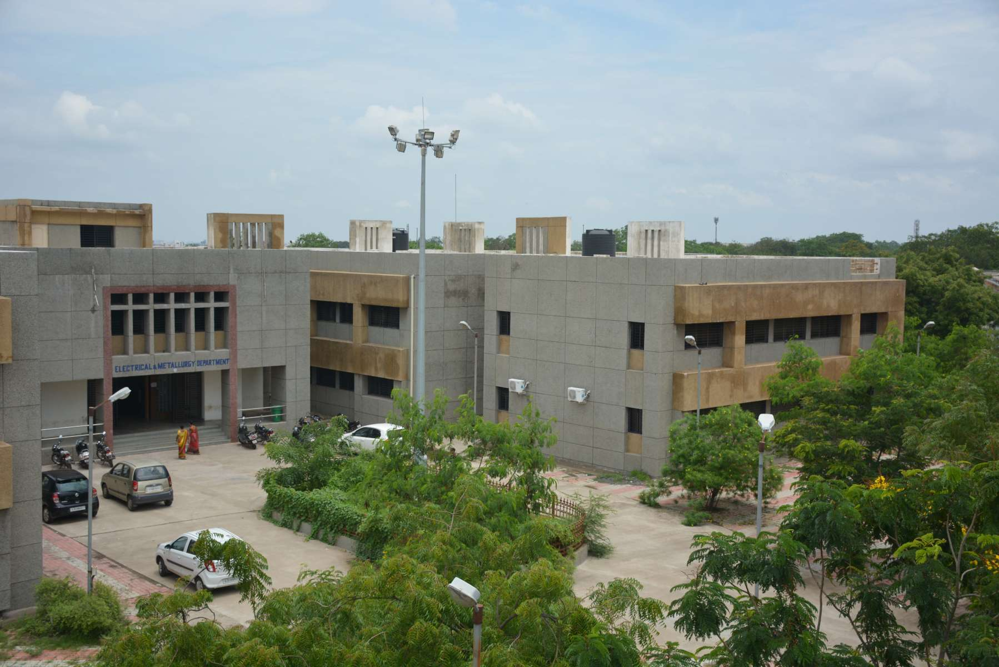

About
Government polytechnic Rajkot was established in the month of June 1964 by the government of Gujarat with an initial intake of 60 students in the civil engineering Diploma Course. This Polytechnic initially located at Rajkot. The new and fully equipped building for the Polytechnic was constructed later in the Year 1966, on a hillock near Aji Dam, a green lush surrounding ideal for the academics. This place is about 6Km. away from the Railway station.

